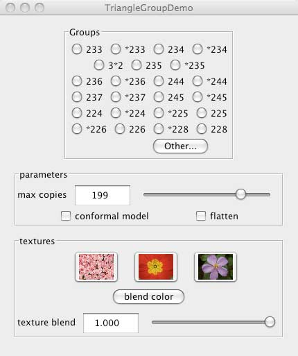

Charles Gunn, gunn@math.tu-berlin.de
First-time users: See this introduction. to the visualization tools involved.
There are geometries in which the sum of the angles of a triangle is NOT 180 degrees. There is a geometry in which the sum is always less than 180 degrees; it's called hyperbolic geometry. When the sum is greater, we have spherical geometry (actually its more correct to call it elliptic geometry, but this is a technical detail which won't concern us.)
If a triangle fulfils certain conditions on its angles, it can be used to make a kaleidoscope. The condition is that the angle at each corner must be an even divisor of 180 degrees. There are several euclidean triangles fulfilling this condition: 60-60-60, 45-45-90, and 30-60-90. These are sometimes called 333, 224, and 236, by replacing the angle by the quotient of 180 by the angle. The condition on pqr is then that 1\p + 1\q + 1\r = 1. Copies of one such triangles can be used to tessellate the plane, that is, cover without overlapping. Or, if one puts together three mirrors in the shape of the triangle, and looks inside, one sees such a tessellation, hence the relation to kaleidoscope.
The triangle 235 is a spherical triangle which plays the same role for spherical geometry, since the sum of its angles is more than 180 degrees, while 237 works for hyperbolic geometry. There are many other spherical and hyperbolic triangles which give rise to tessellations. There is an infinite family of spherical triangles of the form 22n, for n bigger than 2; and an infinite family of hyperbolic triangles of the form 23n for n bigger than 6. Almost every triangle pqr will be hyperbolic since almost every triple satisfies 1/p + 1/q + 1/r < 1.
The set of motions which move the original copy to the different copies of the tessellation form a group. The group generated by the reflections in the side of the triangle is named *236, etc., while the group consisting only of the motions which preserve orientation is named 236, etc. This notation is part of a general notation developed by John Conway for discrete groups.
This demo allows the user to explore the tessellations of the euclidean, spherical, and hyperbolic planes by the triangles 236, 235, and 237 respectively, plus many others. We include the direct subgroups of the triangle groups too.
The tessellation depends on the group, and on the contents of the fundamental region.
I wrote the original version of this program at the Geometry Center at the University of Minnesota in the early 1990's. This is a Java implementation based on jReality (www.jreality.de).
In the graphics window, you can change the contents of the fundamental region. These directions apply when the fundamental region is a triangle; similar instructions apply when it's not.
There should be a panel visible to the left of the 3D graphics window labeled "TriangleGroupDemo". If this is not present, select the menu item "Window->Left slot". The full window should appear as shown below. You can remove the panel using the same menu item. You can also drag the panel out of the window by dragging on the title bar.

There are three main sets of controls:
Here you can choose which group to display. The default is *236, the mirror group of the triangle 236.
The slider labeled "Max copies" controls how many copies (maximum) will be generated. For euclidean groups, the number of copies is also reduced by clipping away any copies which lie outside the viewing frustum. (The scroll wheel can be used to zoom in and out). To increase the value beyond the maximum allowed by the slider, type a value in the text field.
The buttons labeled "conformal model" and "flatten" only have an effect in the hyperbolic case. Then:
The button labeled "Sphere view" has an effect only when the group is spherical. Checking it displays the group as a spherical tessellation, rather than the default planar view.
Here you can control the textures displayed in the three quads. Just drag and drop image files from your file system onto the thumbnails to replace the textures.